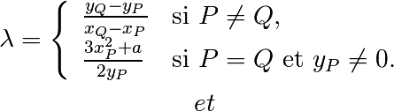

Cryptographie¶
Exercice 1: Cryptographie conventionnelle
- Dans un interpréteur Python créez la chaîne de caractères message contenant la valeur ‘ceci est mon message a chiffrer’. A l’aide d’une boucle for sur cette chaîne, chiffrer la par un décalage de 3 (chiffre de César). Par exemple la lettre a sera chiffrée en la lettre d (et la lettre x en la lettre a).
- Écrire un script Python qui chiffre (ou déchiffre selon le choix de l’utilisateur) une chaîne de caractères entrée au clavier avec une clé (i.e.un décalage) choisi aussi par l’utilisateur. On définira les fonctions chiffrer et dechiffrer.
- Modifier le script précédent pour qu’il utilise la méthode de chiffrement de Vigenère : la clé est désormais une chaîne de caractères et le chiffrement se fait en décalant la i-ème lettre du message gràce à la i-ème lettre de la clé (on reprend au début de la clef quand on a fini de lire celle-ci) suivant la règle naturelle A=1,B=2,...,Z=26.
- Modifier le script précédent pour qu’il chiffre/déchiffre un fichier dont le chemin est entré par l’utilisateur. On pourra utiliser cette nouvelle de Edgar Poe pour tester le script.
Exercice 2: Cryptanalyse fréquentielle
Comme expliqué dans la nouvelle de E. Poe, les chiffrements par substitution alphabétique peuvent être casser facilement par une analyse fréquentielle. Par exemple, dans un texte écrit en langue française, la lettre la plus fréquente est généralement le “E” et puisqu’un chiffrement de César ne modifie pas les fréquences, la lettre qui apparaît le plus fréquemment dans le texte chiffré correspond vraisemblablement à “E” et si c’est le cas le décalage entre les deux lettres donne la clé et permet de retrouver l’intégralité du message clair.
- Écrire une fonction Python qui prenant en entrée une chaîne de caractères (ou un fichier texte) affiche la fréquence des caractères qui le composent.
- Utiliser cette fonction pour créer une fonction qui prend un entrée un texte chiffré avec le chiffrement de César (mais pas la clé) et retourne un texte clair associé. On pourra demander à l’utilisateur de valider que ce texte est correct (et si ce n’est pas le cas proposer un nouveau texte clair probable).
- L’encyclopédie Wikipedia propose un article expliquant une méthode de cryptanalyse du chiffrement de Vigenère reposant sur les mêmes principes. Écrire une fonction Python qui prend un entrée un texte chiffré avec le chiffrement de Vigenère (mais pas la clé) et retourne un texte clair associé possible.
Exercice 3: Cryptographie à clé publique basée sur les courbes elliptiques
En mathématiques, une courbe elliptique est une courbe algébrique définie sur un corps  ,
unie entre autres propriétés, d’une loi de groupe définie sur l’ensemble de ses points.
,
unie entre autres propriétés, d’une loi de groupe définie sur l’ensemble de ses points.
Si la caractéristique du corps est différente de 2 et 3, une courbe elliptique est donnée par
l’équation de Weierstrass  , où
, où  et
et  sont des éléments
du corps vérifiant
sont des éléments
du corps vérifiant  .
.
Nous considérons l’ensemble des points de la courbe

où  est un point sur la droite à l’infini (dans le plan projectif correspondant).
Ce point représente l’élément neutre pour la loi d’addition de la courbe.
est un point sur la droite à l’infini (dans le plan projectif correspondant).
Ce point représente l’élément neutre pour la loi d’addition de la courbe.
L’usage des courbes elliptiques en cryptographie a été proposé en 1986, indépendamment par Neal Koblitz et Victor Miller, pour l’instanciation des opérations cryptographiques asymétriques, comme l’échange de clé entre deux personnes sur un canal non-sécurisé. Par rapport aux systèmes fondés sur RSA, les systèmes de chiffrement sur les courbes elliptiques utilisent des clés plus courtes, pour un niveau de sécurité équivalent.
Par la suite, on considéra une courbe elliptique définie sur un un corps fini  avec
avec  un nombre premier
un nombre premier  . Pour définir l’addition de deux points distincts
. Pour définir l’addition de deux points distincts  et
et
 sur la courbe elliptique
sur la courbe elliptique  , on remarque d’abord que par ces deux points passe
une droite bien définie. Par le théorème de Bézout, cette droite recoupe la courbe en un troisième point.
La somme des points
, on remarque d’abord que par ces deux points passe
une droite bien définie. Par le théorème de Bézout, cette droite recoupe la courbe en un troisième point.
La somme des points  et
et  est alors donnée par le symétrique de ce point par rapport à l’axe
des abscisses. On donne maintenant des équations explicites pour calculer les coordonnées affines du point somme.
est alors donnée par le symétrique de ce point par rapport à l’axe
des abscisses. On donne maintenant des équations explicites pour calculer les coordonnées affines du point somme.
- Si
 et
et  , alors
, alors  .
Autrement dit, l’inverse d’un point pour la loi du groupe est son symétrique
par rapport à l’axe des abscisses.
.
Autrement dit, l’inverse d’un point pour la loi du groupe est son symétrique
par rapport à l’axe des abscisses. - Sinon, on définit les quantités suivantes:


Alors la droite  passe par et et les
coordonnées de
passe par et et les
coordonnées de  sont :
sont :

et